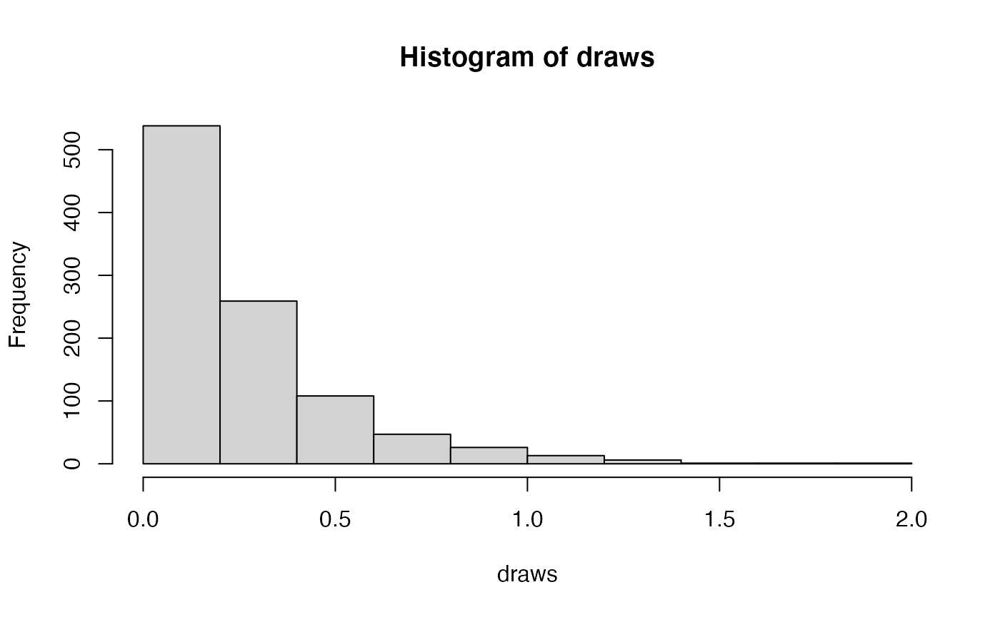
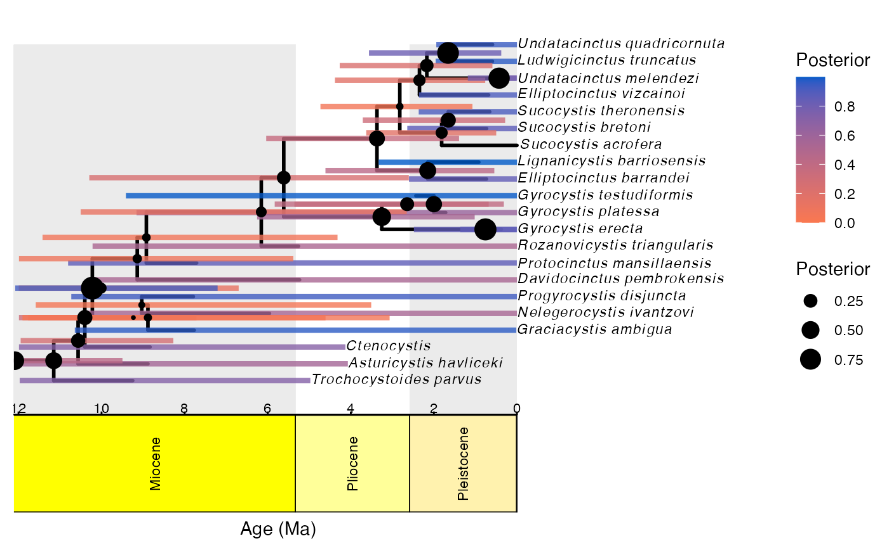
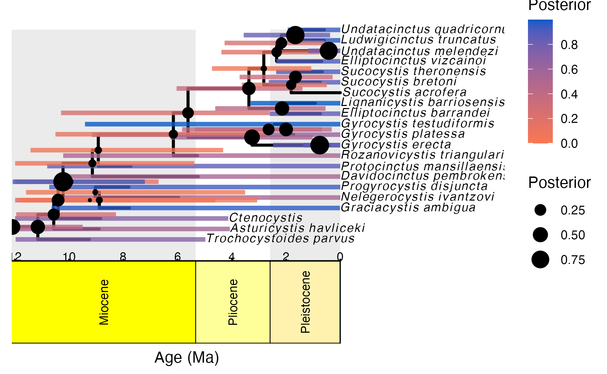

Discrete morphology example
Caleb Charpentier and April Wright
Feb. 20, 2022
DiscreteMorphology.RmdInstallation
Revticulate can be installed in two ways. The first is via CRAN, using the default install.packages function in R:
install.packages("Revticulate")The second is via the remotes package, a lightweight package enabling installation from GitHub repositories.
remotes::install_github("revbayes/Revticulate")The GitHub repository for Revticulate contains cutting-edge features and may contain bugfixes, but the CRAN is known to be stable for everyday use.
Upon first installation, Revticulate will run a package check.
This check searches for and .Renviron file that contains a RevBayes path. If the package doesn’t find this file, or finds it without the path, the package prompts the user to use usethis::edit_r_environ(). This opens the .Renviron file, and the user will enter rb={absolute path to revbayes}. This can be edited at any time if there are multiple installs on the system, or if you recompile RevBayes and want to use a new version.
Before using Revticulate in knitr, make sure the following is in your setup chunk:
library(Revticulate)
knitRev()Introduction
Morphological data is commonly used for estimating phylogenetic trees from fossils. This tutorial will focus on estimating phylogenetic trees from discrete characters, those characters which can be broken into non-overlapping character states. This type of data has been used for estimation of phylogenetic trees for many years. In the past twenty years, Bayesian methods for estimating phylogeny from this type of data have become increasingly common.
This tutorial will give an overview of common models and assumptions when estimating a tree from discrete morphological data. We will use a dataset from (???). This dataset contains 27 extinct echinoderm taxa and 60 binary and multistate characters.
Overview of Discrete Morphology Models
As technologies for obtaining low-cost and high-throughput nucleotide sequence data have become available, many scientists have become reliant on molecular data for phylogenetics. However, morphological data remain the only direct observations we have of most extinct organisms, and are an independent data source for understanding phylogeny. Many of the phylogenetic methods we will discuss in this tutorial were invented for use with sequence data. However, these methods are still very useful for discrete morphological data. We will examine some common assumptions for modeling data in a phylogenetic context, then move on to look at relaxing these assumptions.
Modeling discrete morphological data requires an understanding of the underlying properties of the data. When we work with molecular data, we know a priori that certain types of changes are more likely than others. For example, changes within a type of base (purine and pyrimidine) are much more likely than changes between types of bases. This information can be used to add parameters to the phylogenetic model. There are no equivalent and generalizable truths across characters in a morphological data matrix. For example, while 0 and 1 are commonly coded to “presence” and “absence”, this is not always the case, nor are all characters atomized at the same magnitude. For instance, at one character, changing character states may not reflect a large amount of genetic changes. Theca shape (character 2 in the Zamora et al. 2013 dataset), for example appears quite labile. At another, the changes to the character state may reflect a rearrangement of genetic elements, or might have larger ramifications for the organism’s life and behavior. Character 38, the central plate of the lintel, may be one such character, as it changes seldom.
When we work with morphological data in a Bayesian context, we are performing these analyses after a long history of workers performing phylogenetic analysis in a maximum parsimony framework. Under maximum parsimony, trees are proposed. The number of changes in the data implied by the tree are then counted. The tree implying the fewest changes is considered the best. There may be multiple most parsimonious trees in a dataset. Parsimony has been the dominant method for estimating phylogenetic trees from discrete morphological data. Characters that cannot be used to discriminate between tree topologies are not typically collected by workers using parsimony. For example, characters that do not vary are not collected, as they all have the same length (0 steps) on a tree. Likewise, autapomorphies are typically not collected. As we will see later, this has ramifications for how we model the data.
 Graphical model showing the Mk model (left panel) and corresponding Rev code (right panel).
Graphical model showing the Mk model (left panel) and corresponding Rev code (right panel).
For many years, parsimony was the only way to estimate a phylogenetic tree from morphological data. In 2001, Paul Lewis published the Mk model of morphological evolution. The Mk model (Lewis 2001) is a generalization of the Jukes-Cantor model (Jukes and Cantor 1969) of nucleotide sequence evolution. This model, while simple, has allowed researchers to access the toolkit of phylogenetic methods available to researchers working with other discretely-valued data, such as nucleotides or amino acids.
The Mk Model
As mentioned above, the Mk model is a generalization of the JC model. This model assumes that all transitions between character states are equal, and that all characters in the matrix have the same transition matrix. The transition matrix for a binary trait looks like so:
\[Q = \begin{pmatrix} -\mu_0 & \mu_{01} \\ \mu_{10} & -\mu_1 &\\ \end{pmatrix} \mbox{ ,}\]
In this matrix, \(\mu\) represents the transition probability between the two states that follow it. A transition matrix for multistate data simply expands.
\[Q = \begin{pmatrix} -\mu_0 & \mu_{01} & \mu_{02} & \mu_{03} \\ \mu_{10} & -\mu_1 & \mu_{12} & \mu_{13} \\ \mu_{20} & \mu_{21} & -\mu_2 & \mu_{23} \\ \mu_{30} & \mu_{31} & \mu_{32} & -\mu_3 \end{pmatrix} \mbox{ ,}\]
However, the Mk model sets transitions to be equal from any state to any other state. In that sense, our multistate matrix really looks like this:
\[Q = \begin{pmatrix} -(k-1)\mu & \mu & \mu & \mu \\ \mu & -(k-1)\mu & \mu & \mu \\ \mu & \mu & -(k-1)\mu & \mu \\ \mu & \mu & \mu & -(k-1)\mu \\ \end{pmatrix} \mbox{ ,}\]
You might notice that these transition rates are not different than what we might expect from an equal-weights parsimony matrix. In practice, the Mk model makes very few assumptions due to the complexity and non-generalizability of morphological data.
This model may strike some readers as too simplistic to be adequate for morphological data. However, Bayesian methods are less likely to be mislead by homoplasy than is parsimony (Felsenstein 1985). More recent work has demonstrated that the model outperforms parsimony in many situations, particularly those in which there is high homoplasy (Wright and Hillis 2014), with empirical work demonstrating that it fits many datasets reasonably well (Wright, Lloyd, and Hillis 2016).
In the first part of this tutorial, we will estimate a tree under the Mk model as proposed by Lewis (2001). We will then relax core parameters of the model.
{% subsubsection Ascertainment Bias %}
One remaining component of the model we have not yet discussed is ascertainment bias. Because workers using parsimony do not collect invariant characters and seldom collect autapomorphies, our data are biased. Imagine, for a moment, that you were to measure the average height in a room. But first, you asked the 10 shortest people to leave. Your estimate of the average height would be too tall! In effect, this happens in the morphological data, as well. Because the characters with the fewest changes are not collected, we over estimate the amount of evolutionary change on the tree. At the time of publication, Lewis (2001) also included a correction factor for this bias.
These original corrections involved simulating parsimony non-informative characters along each proposed tree. These would be used to normalize the likelihood value. While this procedure is statistically valid, it is a bit slow. There are multiple ways to perform this correction (Allman and Rhodes 2008). RevBayes uses a dynamic likelihood approach to avoid repeated simulations.
Example: Inferring a Phylogeny of Extinct Cinctans Using the Mk Model
Tutorial Format
This tutorial follows a specific format for issuing instructions and information.
The boxed instructions guide you to complete tasks that are not part of the RevBayes syntax, but rather direct you to create directories or files or similar.
Information describing the commands and instructions will be written in paragraph-form before or after they are issued.
All command-line text, including all Rev syntax, are given in monotype font. Furthermore, blocks of Rev code that are needed to build the model, specify the analysis, or execute the run are given in separate shaded boxes. For example, we will instruct you to create a constant node called example that is equal to 1.0 using the <- operator like this:
example <- 1.0
example## [1] 1It is important to be aware that some PDF viewers may render some characters given as differently. Thus, if you copy and paste text from this PDF, you may introduce some incorrect characters. Because of this, we recommend that you type the instructions in this tutorial or copy them from the scripts provided.
Load Data Matrices
RevBayes uses the function readDiscreteCharacterData() to load a data matrix to the workspace from a formatted file. This function can be used for both molecular sequences and discrete morphological characters. Import the morphological character matrix and assign it the variable morpho.
clearRev()## Successfully reset Rev History!
morpho <- readDiscreteCharacterData("Cinctans.nex")
morpho## [1] "Successfully read one character matrix from file 'Cinctans.nex'"
## [2] "Standard character matrix with 27 taxa and 60 characters"
## [3] "========================================================"
## [4] "Origination: Cinctans.nex"
## [5] "Number of taxa: 27"
## [6] "Number of included taxa: 27"
## [7] "Number of characters: 60"
## [8] "Number of included characters: 60"
## [9] "Datatype: Standard"Create Helper Variables
We will dig into the model momentarily. But first, we will create some variables that are used in our analysis, but are not parameters. We will assign these variables with the constant node assignment operator, <-. Even though these values are used in our scripts, they are not parameters of the model.
We will first create a constant node called num_taxa that is equal to the number of species in our analysis (27). We will also create a constant node called num_branches representing the number of branches in the tree, and one of the taxon names. This list will be used to initialize the tree.
num_taxa <- morpho.size()
num_branches <- 2 * num_taxa - 2
taxa <- morpho.names()
taxa## [1] "[ Ctenocystis_utahensis, Gyrocystis_platessa, Gyrocystis_testudiformis, Gyrocystis_cruzae, Gyrocystis_badulesiensis, Gyrocystis_erecta,"
## [2] "Progyrocystis_disjuncta, Protocinctus_mansillaensis, Elliptocinctus_barrandei, Elliptocinctus_vizcainoi, Sucocystis_theronensis, Sucocystis_bretoni,"
## [3] "Lignanicystis_barriosensis, Undatacinctus_undata, Sucocystis_acrofera, Undatacinctus_quadricornuta, Undatacinctus_melendezi, Asturicystis_jaekeli,"
## [4] "Sotocinctus_ubaghsi, Trochocystites_bohemicus, Trochocystoides_parvus, Ludwigicinctus_truncatus, Graciacystis_ambigua, Asturicystis_havliceki,"
## [5] "Nelegerocystis_ivantzovi, Rozanovicystis_triangularis, Davidocinctus_pembrokensis ]"Next, create a workspace variable called moves, a vector containing all of the MCMC moves used to propose new states for every stochastic node in the model graph.
moves = VectorMoves()
monitors = VectorMonitors()## [1] ""One important distinction here is that moves is part of the RevBayes workspace and not the hierarchical model. Thus, we use the workspace assignment operator = instead of the constant node assignment <-.
The Fossilized Birth-Death Process
Speciation and Extinction Rates
We will begin by specifying the speciation and extinction rates. These parameters govern the rate at which lineages are added to and removed from the population. From a previous study we know that an expoential distribution with a parameter of 1.471 is a reasonable distribution in which this value could lie.
speciation_rate ~ dnExponential(1.471)
moves.append(mvScale(speciation_rate, lambda=0.01, weight=5));
moves.append(mvScale(speciation_rate, lambda=0.10, weight=3));
moves.append(mvScale(speciation_rate, lambda=1.00, weight=1));## [1] ""It is possible to set extinction as its own parameter, for example, like so:
extinction_rate ~ dnExponential(10)## [1] ""However, extinction and speciation rates are often correlated. And so we will instantiate a parameter called turnover, which is the ratio of extinction rate to speciation rate ($ $ / $ $). The parameters to this lognormal distribution were arrived at by simulation of parameter values from the data.
turnover ~ dnLognormal(0.945, 1.926745);
moves.append(mvSlide(turnover, delta=0.01, weight=5))
moves.append(mvSlide(turnover, delta=0.10, weight=3))
moves.append(mvSlide(turnover, delta=1.00, weight=1))## [1] ""As discussed in previous lessons, moves specify how often (weight), we will sample new values for the parameters in our model. The delta of the slide move specifies how different from the initial value a propsed new parameter will be. More information on moves can be found in the MCMC tutorial.
Once our turnover is defined, we can also monitor our extinction values like so:
extinction_rate := turnover*speciation_rate
diversification := speciation_rate - extinction_rate## [1] ""Next, we will define the sampling in the present. Cinctans are extinct. We will rescale our times such that the last appearance of Cinctans in the fossil record is the ‘present’. Previous studies indicate that about half of Cinctans that existed them are in this analysis (???). We will treat $ $ as a known quantity, a constant node. We will therefore, not specify any moves on this parameter.
rho <- .506## [1] ""Our data is made up of fossils. We also need to define the rate at which fossils are recovered on the tree. This is the fossil sampling rate (\(\psi\) in Fig. 3). This is also referred to in the literature as the recovery rate. Prior research indicates that an exponential distribution with parameter 3.892 should be adequate.
psi ~ dnExponential(3.892)
moves.append(mvScale(psi, lambda=0.01, weight=1))
moves.append(mvScale(psi, lambda=0.1, weight=1))
moves.append(mvScale(psi, lambda=1, weight=1))## [1] ""If you do not have a good intution for what this distribution looks like, you can visualize it below.
##
## Attaching package: 'ggplot2'## The following object is masked from 'package:Revticulate':
##
## %+%
The Origin Time
Finally, we need to define an origin time for the Cinctan group. Because we are rescaling the analysis to the treat the ‘present’ as last observation of Cinctans, our origin time will be drawn from a uniform distribution between 10.2 and 15.2 mya. In actuality, this corresponds to 508 to 513 million years ago.
origin_time ~ dnUnif(10.2, 15.2);
moves.append(mvSlide(origin_time, delta=0.01, weight=5.0))
moves.append(mvSlide(origin_time, delta=0.1, weight=5.0))
moves.append(mvSlide(origin_time, delta=1, weight=5.0))## [1] ""The FBD Distribution Object
All the parameters of the FBD process have now been specified. The next step is to use these parameters to define the FBD tree prior distribution, which we will call fbd_dist. We will use this distribution to simulate a starting tree.
fbd_dist = dnFBDP(origin=origin_time, lambda=speciation_rate, mu=extinction_rate, psi=psi, rho=rho, taxa=taxa)## [1] ""There has been a good amount of prior work on Cinctans, and we are able to define the ingroup for the Cinctans. For our taxa without phylogenetic characters, this allows us to tell the model that those taxa belong inside the ingroup. The model can then marginalize over their exact placement, and use the age information to date the total ingroup.
ingroup = clade("Ctenocystis_utahensis","Gyrocystis_platessa","Gyrocystis_testudiformis","Gyrocystis_cruzae","Gyrocystis_badulesiensis", "Gyrocystis_erecta","Progyrocystis_disjuncta","Protocinctus_mansillaensis","Elliptocinctus_barrandei","Elliptocinctus_vizcainoi","Sucocystis_theronensis","Sucocystis_bretoni","Lignanicystis_barriosensis","Undatacinctus_undata","Sucocystis_acrofera","Undatacinctus_quadricornuta","Undatacinctus_melendezi","Sotocinctus_ubaghsi","Ludwigicinctus_truncatus","Graciacystis_ambigua","Nelegerocystis_ivantzovi","Rozanovicystis_triangularis","Davidocinctus_pembrokensis")
constraints = v(ingroup)## [1] ""Next, we will draw a starting tree out of this distribution. This will be a tree that is feasible given our model parameters, and consistent with our clade constraints.
fbd_tree ~ dnConstrainedTopology(fbd_dist, constraints=constraints)## [1] ""We can look at this tree to ensure it exists and seems reasonable:
phylogeny <- doRev("fbd_tree")
ape::plot.phylo(phylogeny)Moves on the Tree Topology and Node Ages
Fossils require some special moves we have not yet seen in any of the tutorials. Firstly, there is mvFNPR, which makes changes to the tree with the knowledge that some tips may not be contemporaneous. mvCollapseExpandFossilBranch allows fossils to transiton between being sampled ancestors and tips. The TimeSlide moves allow us to sample values for node and origin ages.
moves.append(mvFNPR(fbd_tree, weight=15.0))
moves.append(mvCollapseExpandFossilBranch(fbd_tree, origin_time, weight=6.0))
moves.append(mvNodeTimeSlideUniform(fbd_tree, weight=40.0))
moves.append(mvRootTimeSlideUniform(fbd_tree, origin_time, weight=5.0))## [1] ""Sampling Fossil Occurrence Ages
Next, we need to account for uncertainty in the age estimates of our fossils using the observed minimum and maximum stratigraphic ages provided in the file cinctans_fossil_intervals.tsv. These values are were obtained and cleaned from the Paleobiology Database. First, we read this file into a matrix called intervals.
intervals = readDataDelimitedFile(file="cincta_fossil_intervals_FA.tsv", header=true)## [1] ""Next, we loop over this matrix. For each fossil observation, we create a uniform random variable representing the likelihood. In this equation \(t_i\) is the fossil age. \(a_i\) and \(b_i\) are the minimum and maximum edges of the fossil age range. And so, we treat the fossil age as being drawn from a uniform distribution between \((t_i - b_i)\) and \((t_i - a_i)\)
intervals = readDataDelimitedFile(file="cincta_fossil_intervals_FA.tsv", header=true)
for(i in 1:intervals.size())
{
taxon = intervals[i][1]
a_i = intervals[i][2]
b_i = intervals[i][3]
t[i] := tmrca(fbd_tree, clade(taxon))
fossil[i] <- a_i
fossil[i] ~ dnSoftBoundUniformNormal(t[i] - b_i, t[i] - a_i, sd = 2, p = 0.025)
fossil[i].clamp( 0 )
}## [1] ""Finally, we add a move that samples the ages of the fossil nodes on the tree.
moves.append(mvFossilTimeSlideUniform(fbd_tree, origin_time, weight=5.0))## [1] ""We are also going to write the number of sampled ancestors in our analysis to our log files. You may be interested in this value.
num_samp_anc := fbd_tree.numSampledAncestors()## [1] ""Clock model
We will use the clock model we specified in the this tutorial on morphological clocks again.
ucln_mean ~ dnExponential(2.0)
# sigma
ucln_sigma ~ dnExponential(3.0)
# Set a deterministic node on sigma^2
ucln_var := ucln_sigma * ucln_sigma
ucln_mu := ln(ucln_mean) - (ucln_var * 0.5)
moves.append(mvScale(ucln_mean, lambda=1.0, tune=true, weight=4.0))
moves.append(mvScale(ucln_sigma, lambda=0.5, tune=true, weight=4.0))
for (i in 1:num_branches){
branch_rate_var[i] ~ dnLognormal(ucln_mu, ucln_sigma)
moves.append(mvScale(branch_rate_var[i], lambda=1, tune=true, weight=2.0))
}
moves.append(mvVectorScale(branch_rate_var,lambda=1.0,tune=true,weight=2.0))
moves.append(mvVectorSingleElementScale(branch_rate_var,lambda=30.0,tune=true,weight=1.0))## [1] ""Morphological Change Model
We will also use the morphology model defined in this tree inference tutorial
alpha_morpho ~ dnUniform( 0, 1E6 )
rates_morpho := fnDiscretizeGamma( alpha_morpho, alpha_morpho, 4 )
#Moves on the parameters of the Gamma distribution.
moves.append(mvScale(alpha_morpho, lambda=1, weight=2.0))
n_max_states <- 7
idx = 1
morpho_bystate[1] <- morpho
for (i in 2:n_max_states) {
# make local tmp copy of data
# only keep character blocks with state space equal to size i
morpho_bystate[i] <- morpho
morpho_bystate[i].setNumStatesPartition(i)
# get number of characters per character size wth i-sized states
nc = morpho_bystate[i].nchar()
# for non-empty character blocks
if (nc > 0) {
# make i-by-i rate matrix
q[idx] <- fnJC(i)
# create model of evolution for the character block
m_morph[idx] ~ dnPhyloCTMC( tree=fbd_tree,
Q=q[idx],
nSites=nc,
siteRates=rates_morpho,
branchRates = branch_rate_var,
type="Standard")
# attach the data
m_morph[idx].clamp(morpho_bystate[i])
# increment counter
idx = idx + 1
idx
}
}## [1] "NOTE: setNumStatesPartition() partitions by the maximum observed state, not the total number of observed states."
## [2] "2"
## [3] "NOTE: setNumStatesPartition() partitions by the maximum observed state, not the total number of observed states."
## [4] "3"
## [5] "NOTE: setNumStatesPartition() partitions by the maximum observed state, not the total number of observed states."
## [6] "4"
## [7] "NOTE: setNumStatesPartition() partitions by the maximum observed state, not the total number of observed states."
## [8] "NOTE: setNumStatesPartition() partitions by the maximum observed state, not the total number of observed states."
## [9] "NOTE: setNumStatesPartition() partitions by the maximum observed state, not the total number of observed states."Running our analysis
As we have in prior sections, we will now initialize and execute our model. First, we create the model object that contains all of our character change, clock, and tree model parameters and priors.
mymodel = model(fbd_tree)## [1] ""Next, we inform RevBayes where we would like to write our sampled parameters.
monitors.append(mnModel(filename="output/cinc_dated.log", printgen=10))## [1] ""And where we would like to write our trees.
monitors.append(mnFile(filename="output/cinc_dated.trees", printgen=10, fbd_tree))## [1] ""We can also echo some facets to the screen
monitors.append(mnScreen(printgen=10, num_samp_anc, origin_time))## [1] ""And then we initialize the model.
mymcmc = mcmc(mymodel, monitors, moves)And run it. In a real analysis, you would want to run this for far more than 1000 generations.
mymcmc.run(generations=10000)## [1] ""And then we quit.
q()## [1] ""Running the estimation
We can automate convergence assessment using the R package convenience (Fabreti, Höhna, and Schliep 2021). First, we will save our Rev session to a .Rev Script. In this case, we will set use_quit = FALSE because we typed the quit command in the above cell. We use the command callRevFromTerminal to run the file, then diagnose convergence with the convenience package. Because this is a longer computation, it is not directly run in this tutorial, but can be run on the user’s computer.
library(convenience)
saveRev("mcmc_FBD.Rev", use_quit=FALSE)
callRevFromTerminal("mcmc_FBD.Rev")
checkConvergence(path = "output/")We can also use RevGadgets (Tribble et al. 2021) to visualize our tree with a geological time scale. In this example, we use RevBayes to compute a summary tree, then export to RevGadets. Because this can be a long computation, the summarizing is not run here, but is provided. We can also use functions in ggplot2 (Wickham and Hesselberth, n.d.) to export figures. In this way, Revticulate can enable full reproducibility of results and graphics generation.
library(RevGadgets)
library(ggplot2)
#doRev('trace = readTreeTrace("output/cinc_dated.trees", burnin=.25)
# mccTree(trace, "sample.tre")', timeout=60)
tree <- readTrees("sample.tre")##
|
| | 0%
|
|========================================| 100%
tree_output <- plotFBDTree(tree = tree,
timeline = T,
geo_units = "epochs",
time_bars = T,
tip_labels_italics = T,
tip_labels_remove_underscore = T,
tip_labels_size = 3,
node_pp = T,
tip_age_bars = T,
node_age_bars = T,
age_bars_colored_by = "posterior")## Warning: The tree contained negative edge lengths. If you want to ignore the edges,
## you can set 'options(ignore.negative.edge=TRUE)', then re-run ggtree.## Warning in plotTreeFull(tree = tree, timeline = timeline, geo_units =
## geo_units, : Plotting with default axis label (Age (Ma))
tree_output## Warning: Removed 1 rows containing missing values (geom_segment).
ggsave("Cinctans_maximum_clade_credibility.png", tree_output)## Saving 7.29 x 4.51 in image## Warning: Removed 1 rows containing missing values (geom_segment).
References
Allman, E. S., and J. A. Rhodes. 2008. “Identifying Evolutionary Trees and Substitution Parameters for the General Markov Model with Invariable Sites.” Mathematical Biosciences 211: 18–33.
Fabreti, Luiza, Sebastian Höhna, and Klaus Schliep. 2021. Lfabreti/Convenience: Integration with Zenodo (version zenodo). Zenodo. https://doi.org/10.5281/zenodo.5520581.
Felsenstein, Joseph. 1985. “Phylogenies and the Comparative Method.” The American Naturalist, 1–15. https://doi.org/10.1086/284325.
Jukes, TH, and CR Cantor. 1969. “Evolution of Protein Molecules.” Mammalian Protein Metabolism 3: 21–132. https://doi.org/10.1016/B978-1-4832-3211-9.50009-7.
Lewis, Paul O. 2001. “A Likelihood Approach to Estimating Phylogeny from Discrete Morphological Character Data.” Systematic Biology 50 (6): 913–25. https://doi.org/10.1080/106351501753462876.
Tribble, Carrie M, William A Freyman, Michael J Landis, Jun Ying Lim, Joellë Barido-Sottani, Bjørn Tore Kopperud, Sebastian Hӧhna, and Michael R May. 2021. “RevGadgets: An R Package for Visualizing Bayesian Phylogenetic Analyses from Revbayes.” Methods in Ecology and Evolution.
Wickham, Hadley, and Jay Hesselberth. n.d. “Pkgdown: Make Static Html Documentation for a Package, 2018.” URL Https://CRAN. R-Project. Org/Package= Pkgdown. R Package Version 1 (0): 560.
Wright, April M, and David M Hillis. 2014. “Bayesian Analysis Using a Simple Likelihood Model Outperforms Parsimony for Estimation of Phylogeny from Discrete Morphological Data.” PLoS One 9 (10): e109210. https://doi.org/10.1371/journal.pone.0109210.
Wright, April M., Graeme T. Lloyd, and David M. Hillis. 2016. “Modeling Character Change Heterogeneity in Phylogenetic Analyses of Morphology Through the Use of Priors.” Systematic Biology 65 (4): 602–11. https://doi.org/10.1093/sysbio/syv122.